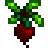

Gameplay
1 일반적 시스템
농사
목축
채집
채광
낚시
2 난이도
세금 X
식사를 하지 않아도 죽지 않음
목장이야기와 유사
3 싱글, 멀티플레이 모두 지원
농사

사게절 존재
봄
콜리플라워 / 175g
1년차 봄철 작물중 개당 가격이 가장 높은 작물
딸기 / 120g
2계절 커피콩에 충분히 맞댈 정도로 수익이 좋다
완두콩 / 40g
한 번 심어두면 봄이 끝날 때까지 정기적으로 자란다
파스닙 / 35g
상당수의 NPC가 좋아하기 때문에 초반 선물로 제격인 작물
감자 / 80g
수확 시 확률적으로(25% 정도) 더 나오기도 하기 때문에 콜리플라워의 효율에 버금간다
케일 / 110g
수확 효율은 감자보다 낮지만 개당 가격이 비싼 편에 속하는 작물
대황 / 220g
사막을 가야 하기에 사실상 2년차 작물이다
여름
멜론 / 250g
거대 작물 가능 작물들이 그렇듯 거대 작물까지 염두에 두면 효율이 높다
블루베리 / 50g
한 번에 3개씩 수확하는데, 등급 높이는 비료를 쓰면 효율이 떨어진다
홉 / 25g
여름 1일에 심을 경우 여름 작물 중 2번째로 효율이 좋은 작물
토마토 / 60g
감자처럼 수확시 몇 개 더 수확할 때가 있다, 만들 수 있는 음식이 꽤나 많다
옥수수 / 55g
가을까지 수확 가능, 또띠야 재료인데 콩처럼 호감도 높일 때 유용하다
스타후르츠 / 750g
가공이 가능한 작물 중에서 가장 비싸서 와인 재료로 가장 적합한 작물이다
해바라기 / 80g
작물들 중 유일하게 팔아도 손해를 보는 작물이다
가을
호박 / 320g
거대 작물 재배 가능, 쓰임새도 많고 효율도 좋다
크랜베리 / 75g
기본적으로 한번에 2개씩 수확하고, 더 수확할 확률도 있다.

포도 / 80g
여름에 농장 밖에서 채집도 가능, 장대 작물이라서 그런지 효율이 꽤 높은 편
청경채 / 80g
좋아하는 사람이 많아서 선물용으로는 꽤 좋은 작물
가지 / 60g
거의 번들용＋요리 재료용으로만 키워지는 작물
사탕무 / 100g
풍차에 넣으면 1개당 3개의 설탕(50g)이 나오며 온갖 음식의 재료로 쓰인다
요정 장미 / 290g
생산 되는 꿀의 가격은 680g로 모든 꿀 중 가장 높다, 6가지 다른 색상이 나온다.
특별 작물
고대 과일 / 550g
과일 기본 가격이 스타후르츠 다음으로 비싸고, 중반 이후 가장 효율적인 돈벌이 수단이다.
선인장 열매 / 320g
온실에 둔다면 사시사철 재배가 가능해 의외로 효율은 상당하다
달콤보석베리 / 3000g
성장 시간이 길지만 가격 자체가 워낙 높아 효율은 모든 작물 중 가장 높다
목축
종류
이름, 사진, 생산품, 가공품 순
닭
달걀
마요네즈
공룡
공룡알
공룡 마요네즈
토끼
토끼털
토끼발
옷감
젖소
우유
치즈
염소
염소젖
염소젖 치즈
양
양털

옷감
돼지
송로버섯
송로버섯 기름
타조
타조알
마요네즈 10개
채집
봄
고추냉이

봄에 볼 수 있는 매콤한 식물 뿌리
수선화

전형적인 봄꽃으로, 선물로도 좋습니다
리크

양파의 맛있는 친척
민들레

가장 예쁜 꽃은 아니지만, 잎으로 맛있는 샐러드를 만들 수 있습니다
새먼베리

숲의 풍미가 나는 봄철 베리
여름
백량금

톡 쏘는 향이 납니다
포도
달콤한 과일 한 송이
스위트피

향긋한 여름철 꽃
청나래 고사리

어린 새싹은 식용가능한 별미입니다
가을
야생 자두

톡 쏘는 향과 맛이 나고, 과즙이 많습니다
헤이즐넛

정말 큰 헤이즐넛입니다
블랙베리

초가을 별미
보라색 버섯

동굴 깊은 곳에서 발견되는 희귀한 버섯
겨울
겨울뿌리

탄수화물이 가득한 덩이줄기 식물
수정 과일

눈에서 솟아나는 여린 과일
눈마

눈 밑에 숨어있던 작은 마
크로커스

겨울에 피는 꽃
광산
붉은 버섯

동굴에서 발견되는 얼룩무늬 버섯
보라색 버섯
동굴 깊은 곳에서 발견되는 희귀한 버섯
동굴 당근

동굴에서 발견되는 전분이 많은 간식. 광부들이 일을 더 오래할 수 있게 해줍니다
해변
앵무조개 껍데기

고대 껍데기
산호

작은 생물체들이 무리 지어 형성한 아름다운 구조물
성게

천천히 움직이는 가시 돋친 생물체로, 몇몇 사람들은 진미로 취급합니다
무지개 껍데기

아주 아름다운 껍데기
조개

한때 누군가 여기 살았습니다
해초

요리에 사용할 수 있습니다